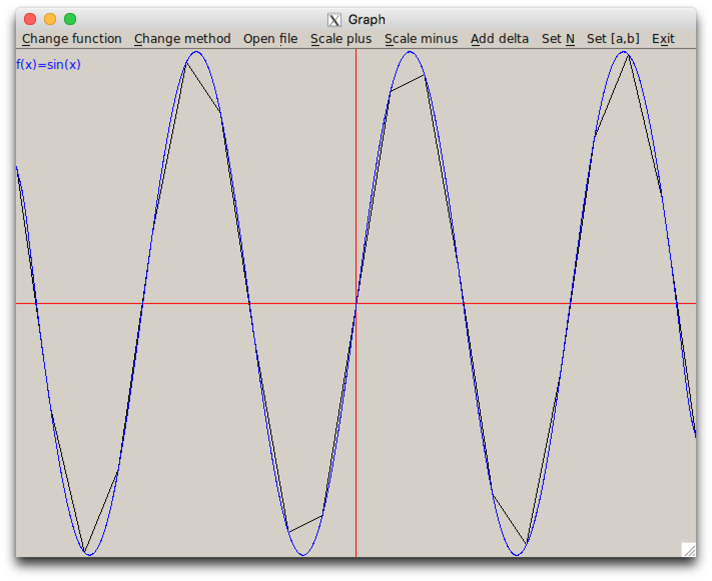
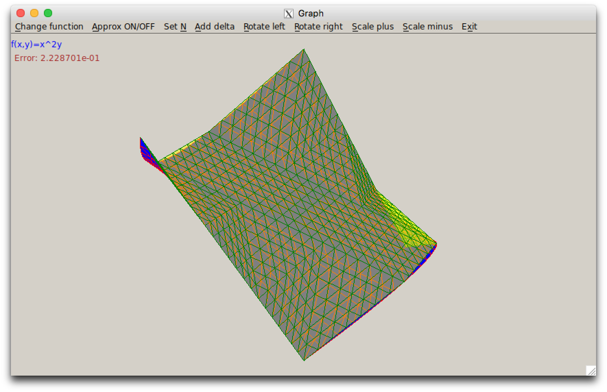

Методы приближения функций
Семестр 6
Задачи
Решение линейной системы — MPI
Приближение функции одной переменной
Приближение функции нескольких переменных
Введение в MPI
Задача 1
Решение линейной системы — MPI
— метод решения линейной системы (обращения матрицы), с которым вы работали в предыдущем семестре, необходимо адаптировать для исполнения в системах с распределённой памятью с использованием стандарта MPI (о нём — чуть позже).
Требования по ускорению такие же, как и для версии на Pthreads.
Добавляется дополнительное требование на пересылки данных между процессами: не более O(n) пересылок, объём каждой — не более O(n). Про пересылки — тоже чуть позже.
Матрица должна быть распределена между процессами. Если процессов больше одного, ни один процесс не должен выделять память под всю матрицу (или под всю обратную). Использование памяти для P процессов должно быть \(n^2/P + O(n)\) для решения линейной системы и \(2n^2/P + O(n)\) для обращения матрицы.
Задача 2
Приближение функции одной переменной
— реализация двух методов и графического интерфейса к ним (на основе заготовки).

Задача 3
Приближение функции нескольких переменных
— реализация двух методов (или одного — метода конечных элементов) и графического интерфейса к ним (на основе той же заготовки).

Зачёт
— по тому же принципу, что и в предыдущем семестре.
- 3 задачи = допуск к теоретическому зачёту.
- Теория сдаётся письменно, ~1.5 часа на 2.5 вопроса.
- Возможен досрочный теоретический зачёт, но к нему нужно сдать 3 задачи.
- В начале зачётной недели — первый теоретический зачёт.
- После него — два практических зачёта по 1.5 часа для тех, кто не сдал 3 задачи.
- Если вы не сдали задачи за 2 практических зачёта, следующая попытка — на пересдаче.
- В конце зачётной недели — второй теоретический зачёт.
- Если вы не сдали теорию со второго раза, следующая попытка — на пересдаче.
Литература
Теория по задачам 2,3 и для зачёта
- К. Ю. Богачев. Практикум на ЭВМ. Методы приближений функций.
MPI
- К. Ю. Богачев. Основы параллельного программирования (MPI).
- (англ.) http://mpitutorial.com/tutorials/
- Наша «краткая шпаргалка» на основе, в том числе, п.3: https://maxxk.github.io/programming-semester-6/mpi-cheatsheet
Общая и распределённая память
Современные суперкомпьютеры выглядят приблизительно так:

Общая и распределённая память
На фотографии на предыдущем слайде — IBM Blue Gene/P. Он составлен из 72 стоек. В каждой стойке — 16 блейд-серверов, на каждом сервере — несколько процессоров, у каждого из которых — 8 или больше ядер.
Ядра одного процессора имеют быстрый доступ к одному блоку памяти.
Несколько процессоров образуют NUMA-узел — в несколько раз более медленный доступ к участкам памяти, которые принадлежат другим процессорам, но с точки зрения программиста это можно назвать общей памятью (могут работать, например, программы использующие pthreads).
NUMA-узлы связаны интерконнектом. Интерконнект можно считать высокоскоростной сетью — но прямого доступа к памяти соседнего узла интерконнект не предоставляет.
MPI
На машинах с распределённой памятью части программы, работающие на разных узлах, передают данные с использованием обмена сообщениями.
На настоящее время стандартом для разработки программ для машин с распределённой памятью является MPI, дословно — «интерфейс передачи сообщений».
Как работает MPI
Pthreads
- Запускается одна копия программы
- Программа с помощью
pthread_createсоздаёт несколько потоков с заданными аргументами и управляет их выполнением.
MPI
- Запускается сразу P процессов (копий) программы, возможно, на разных узлах кластера. Другие копии программы в процессе выполнения запустить нельзя.
- Копиям передаётся общее число процессов и номер текущего процесса, кроме этого они ничем* не отличаются.
Сборка программ
Для работы с MPI во все файлы с исходным кодом, в которых используются функции или типы данных MPI, должен быть включён заголовочный файл mpi.h:
#include <mpi.h>Для компиляции используются обёртки над gcc и g++ — mpicc и mpicxx соответственно. Вместо ld можно использовать mpicc. Командная строка для компиляции отличается от той, которую вы использовали ранее, только тем, что вместо gcc используется mpicc и т.п., все ключи сохраняют своё значение.
gcc -g -lm
mpicc -g -lm myprog.c -o myprog
gcc -O3 myprog.c
mpicc -O3 myprog.cВыполнение программ
Запуск осуществляется с использованием команды mpirun:
mpirun -np количество_процессов имя_программы аргументы_программынапример:
mpirun -np 4 ./a.out --formula 2 -n 2000Аргументы --formula 2 и -n 2000 передаются в вашу программу (./a.out), аргумент -np 4 не передаётся.
Инициализация и завершение
В начале программы, работающей с MPI, необходимо инициализировать библиотеку MPI с помощью функции MPI_Init; перед завершением — вызвать функцию завершения MPI_Finalize.
int MPI_Init(int *argc, char*** argv);
int MPI_Finalize();Аргументы argc и argv функции MPI_Init должны быть указателями на соответствующие аргументы функции main, см. пример далее. Функция MPI_Finalize не содержит аргументов.
Номер и общее количество процессов
Количество запущенных процессов не должно передаваться в программу в качестве отдельного аргумента командной строки, но определяется с использованием функций MPI_Comm_size. Номер, который автоматически присваивается процессу, может быть получен с помощью функции MPI_Comm_rank. Пример: при запуске p процессов, в каждом из результат выполнения MPI_Comm_size равен p, а результат выполнения MPI_Comm_rank — числам от 0 до p-1. Нулевой процесс обычно для простоты считают «главным» и выполняют из него весь ввод-вывод (при разработке допускается использовать отладочный printf-вывод во всех процессах).
int MPI_Comm_rank(MPI_Comm comm, int *rank);
int MPI_Comm_size(MPI_Comm comm, int *total_procs);Далее под «номером процесса» будем понимать число, которое возвращает в переменной rank вызов функции MPI_Comm_rank.
Минимальный пример
#include <stdio.h>
#include <mpi.h>
int main(int argc, char **argv) {
int rank, size;
MPI_Init(&argc, &argv);
MPI_Comm_rank(MPI_COMM_WORLD, &rank);
MPI_Comm_size(MPI_COMM_WORLD, &size);
printf("Process #%d of %d\n", rank, size);
MPI_Finalize();
return 0;
}Задание к следующему занятию
- В код программы добавить инициализацию и завершение MPI, получение общего количества и текущего номера процесса.
- Подготовить схему распределения матрицы по \(P\) процессам и обмена данными между процессами, с использованием которой ваша программа будет удовлетворять требованиям по ускорению, используемой памяти и пересылкам.